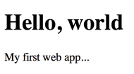
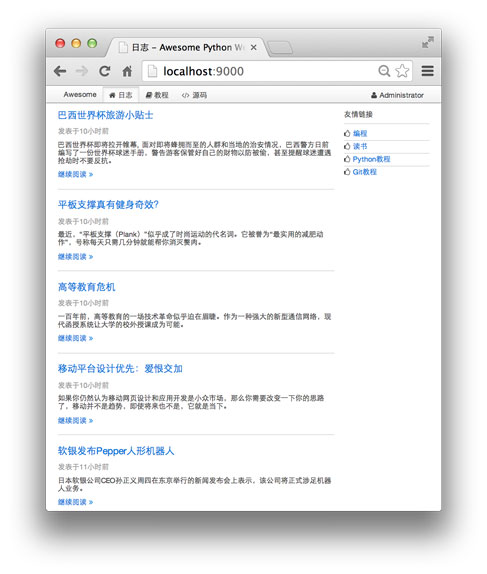
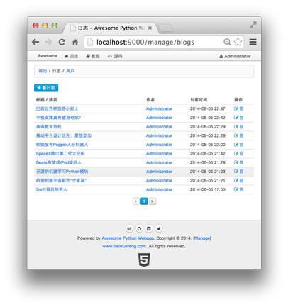

第23章 实战
看完了教程，是不是有这么一种感觉：看的时候觉得很简单，照着教程敲代码也没啥大问题。
于是准备开始独立写代码，就发现不知道从哪开始下手了。
这种情况是完全正常的。好比学写作文，学的时候觉得简单，写的时候就无从下笔了。
虽然这个教程是面向小白的零基础Python教程，但是我们的目标不是学到60分，而是学到90分。
所以，用Python写一个真正的Web App吧！
目标
我们设定的实战目标是一个Blog网站，包含日志、用户和评论3大部分。
很多童鞋会想，这是不是太简单了？
比如webpy.org上就提供了一个Blog的例子，目测也就100行代码。
但是，这样的页面：

你拿得出手么？
我们要写出用户真正看得上眼的页面，首页长得像这样：

评论区：
还有极其强大的后台管理页面：

是不是一下子变得高端大气上档次了？
项目名称
必须是高端大气上档次的名称，命名为awesome-python-webapp。
项目计划
项目计划开发周期为16天。每天，你需要完成教程中的内容。如果你觉得编写代码难度实在太大，可以参考一下当天在GitHub上的代码。
第N天的代码在
https://github.com/michaelliao/awesome-python-webapp/tree/day-N
上。比如第1天就是：
https://github.com/michaelliao/awesome-python-webapp/tree/day-01
以此类推。
要预览awesome-python-webapp的最终页面效果，请猛击：